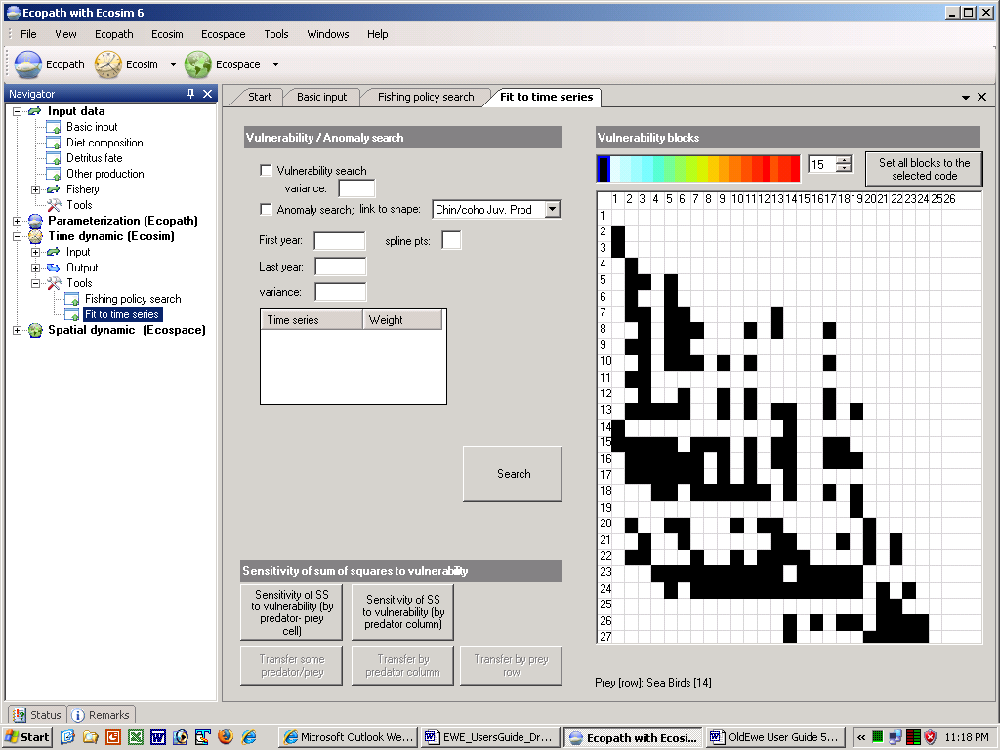

The Fit to time series search interface (Time dynamic (Ecosim) > Outputs > Tools > Fit to time series; Figure 9.9) allows users to do four types of analysis with the SS measure:
Option 1 (above) is invoked by clicking one of the two Sensitivities of SS to vulnerability button at the bottom of the screen. You can choose whether to determine sensitivity of SS to vulnerabilities associated with individual predator-prey interactions (i.e., by predator-prey cell) or to vulnerability settings for all of a predator’s foraging arena (i.e., by predator column).
Progress in this assessment is shown by placing an X in the vulnerability layout grid (on the right of the form) as the sensitivity to each vulnerability is computed. When all tests are completed, relative sensitivities are shown on a color code scale on the vulnerability grid. A grid cell shown in red (for prey type in row i, predator type in column j of the grid) is one for which SS was most sensitive (among those tested) to changing that vulnerability, while a grid cell shown in blue is one for which SS was not sensitive to changing that vulnerability. Note that the colors shown on the vulnerability grid after this search are purely to help the user identify vulnerability blocks for the parameter search, and are NOT used by the interface to define vulnerability blocks for estimation.
It is, however, possible to transfer the information from the sensitivity table to the search table using one of the three transfer buttons on the form. We recommend that you use the transfer some pred/prey or transfer by pred column rather than the transfer by prey row, which biologically makes less sense.
Options 2 and/or 3 are invoked by pressing the Search button on the search interface, after deciding which parameters to include in the search by setting nonzero variance values for one or both of Vulnerability search and Anomaly search:
Checking the Vulnerability search box and setting its variance > 0 causes the search to include parameter blocks that have been sketched as non-black in the vulnerability layout grid on the right side of the search interface.
Checking the Anomaly search box and setting its variance > 0 causes the search to include primary productivity parameters for the specified year range (set using the First year and Last year boxes). You must also select a time series forcing shape from the drop down menu to the right of the Anomaly search box (see Apply forcing function for primary production).
The variance values set by the user are treated as Bayesian ‘prior’ variances for the parameters included in the search. Large variance values ‘allow’ the search procedure to vary the parameters more widely in search of lower SS parameter combinations.
When the search button is pressed, a frame appears at the left of the interface to show progress of the SS minimization procedure (a Marquardt nonlinear search algorithm with trust region modification of the Marquardt steps). For each step in the search, the algorithm must run the Ecosim model at least N + 1 times, where N is the number of parameters with nonzero variances (N can be up to Last year - First year + 16). A dot is written in the frame for each Ecosim run. For most of these runs, what the algorithm is doing is to increment one PP annual value or one vulnerability block value slightly, so as to calculate the ‘Jacobian matrix’ of sensitivities of each of the predicted time series observations to each of the parameters. After N+1 such checks, the Jacobian matrix is used to estimate an initial best step change for each parameter, and a few more runs are used to further improve the step. The algorithm stops when these changes become very small (or a numerical error occurs in the search calculations, if the search results in unrealistic values for some parameters). If no numerical error occurs during the search, the best estimates found during the search will be displayed in the Forcing functions tab (for PP time series) and/or the Flow control tab (for vulnerabilities). These new values will be saved with the Ecosim scenario if the user answers yes to the save scenario message on exit from Ecosim.
Option 4 is necessary because, when you use the search interface to estimate time series values of a forcing function, e.g., to obtain a temporal pattern of apparent primary production ‘anomalies’ for the ecosystem, you need to be careful about the risk of obtaining a spurious anomaly sequence that just represents measurement errors in the fitting data. Generally, if you are fitting the data to n independent time series of relative abundance, (i.e., for n of the groups), you can expect the fitting procedure to reduce the sum of squares (SS) by the proportion (n-1)/n by varying time forcing values even if there is no real time forcing effect. So if n=1, the fitting procedure can usually find a sequence of forcing values that make SS=0, but this sequence is meaningless (could be either real productivity anomalies or just spurious way of explaining measurement errors in the single abundance time series).
The Null hypothesis distribution SSred/SSo button allows you to estimate a probability distribution for the F statistic SSreduced/SSbase under the null hypothesis that all of the deviations between model and predicted abundances are due to chance alone, i.e. under the hypothesis that there are no real productivity anomalies. The calculation of this F statistic requires a Monte-Carlo simulation procedure in order to account for autocorrelation in the model residuals that is expected even under the null hypothesis. Be warned that even if you do find a statistically significant reduction in SS by using the search procedure, this does not mean that the estimated sequence of relative primary production values is in fact ‘real’. All that you can say is this: “assuming that primary production was in fact variable and that this did cause changes in relative abundance throughout the food web, then our best estimate of the historical pattern of variation is the one obtained by the fitting procedure”.
Use the Time series weight box to set relative weights. This represents a prior assessment by the user about relatively how variable or reliable that type of data is compared to the other reference time series (low weights imply relatively high variance or unreliable data; higher weights imply low variance or reliable data). This grid will/will not overwrite weights that were set on the Time series form.
For users familiar with nonlinear estimation procedures used in single-species stock assessment, e.g., for fitting production models to time series CPUE data, searches on the vulnerability parameters should look quite familiar. In essence, the Ecosim search procedure for vulnerabilities is just an ‘observation error’ fitting procedure where vulnerability changes usually have effects quite similar to changes in population ‘r’ parameters in single-species models. Allowing the search to also include historical primary production ‘anomalies’ corresponds to searching also for ‘nuisance parameter’ estimates of what we usually call the ‘process errors’ in single species assessment.
Ecosim users are cautioned that the search procedure in no way guarantees finding ‘better’ Ecosim parameter estimates. Better fits to data can easily be obtained for the wrong reasons (some time series, particularly CPUE data, can be misleading in the first place, as can historical estimates of changes in fishing mortality rates; many parameter combinations may equally well ‘explain’ patterns in the data). Nonlinear search procedures can become lost or ‘trapped’ at local parameter combinations where there are local minima in the SS function far from the combinations that would actually fit the data best.
The best way to insure against the technical problems of searching a complex SS function is to use ‘multiple shooting’: start the search from a variety of initial parameter combinations (patterns sketched in time forcing function and/or vulnerability settings in flow control interface) and check whether it keeps coming back to the same final estimates. Look very closely at the time series data for possible violations of the assumption that y = qB, due to progressive changes in the methods of measuring relative abundance (y) or nonlinearities caused by factors such as density-dependent catchability. If y is a biomass reconstruction from methods such as VPA that assume constant natural mortality rate M, watch out for spurious trends in y caused by the sort of changes in M that Ecosim predicts, particularly for younger animals. Look for alternative combinations of Ecosim parameters that appear to fit the data equally well but would imply quite different responses to policy changes such as increases in fishing rates.
Search procedures are most useful in diagnosing problems with both the model and data. That is, the greatest value of doing some formal estimation is while it seems not to be working, when it cannot find good fits to data. Poor fits can be informative about both the model and the data. For example, in a study on impact of lobster fishing on Hawaiian monk seals, it seemed initially that Ecosim could ‘explain’ monk seal decline as a consequence of fishing down one of their foods, the lobster. But this hypothesis never really fit the monk seal population trend data well: Ecosim predicted a monk seal decline with development of the lobster fishery, but nowhere as severe or persistent as the observed decline. This lack of fit told us we needed to look for some other factor that hit the monk seals well after the lobster fishery had its impacts, and this factor turned out to be an oceanographic regime shift (decrease in primary productivity) that apparently impacted the availability of fish prey as well as lobsters. As an example of learning things about the data as well as the model, attempts to fit Ecosim to historical abundance estimates (from VPA) for Pacific herring in the Georgia Strait, British Columbia, Canada, have consistently led to Ecosim predicting lower juvenile herring abundances than observed during peak periods of historical fishing, and lower recent biomass of adult herring than observed. It looks in this case like the problem is with the data, not Ecosim: VPA likely resulted in overestimates of juvenile herring abundance during a period when we would expect juvenile herring to have had higher natural mortality rate than assumed in the VPA, and overestimates of adult biomass due to not correcting the VPA estimates for observed changes in growth rates (lower conditions factors observed) during the period where Ecosim predicts lower biomass.

Figure 9.9 Ecosim: fitting to time series data. Results from checking “sensitivity of SS to v’s”. The most sensitive interactions can subsequently be used for the vulnerability search by choosing one of the three ‘transfer’ buttons (though avoid the option to transfer by prey row). Next click ‘Search’ or if desired, check the ‘Anomaly search’ first (if so link primary producers to the shape file listed). See text for further explanation.